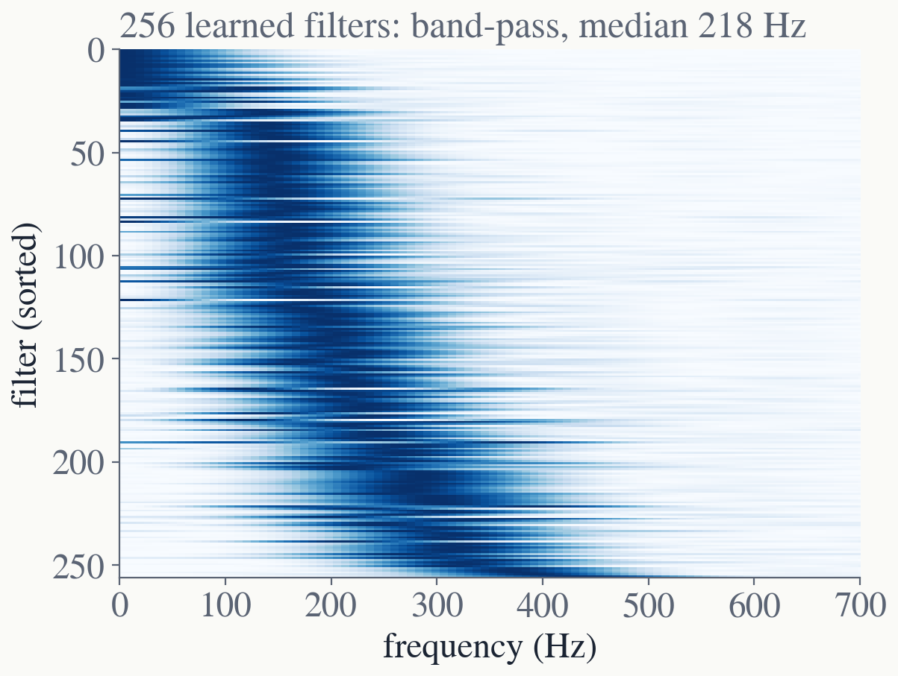
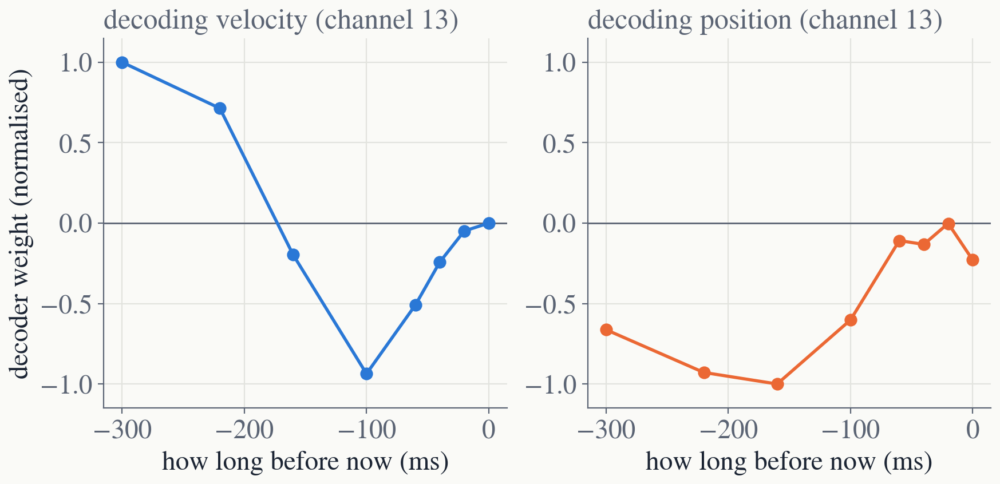
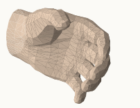

semg2pose · guía desde cero
De la EMG a la mano
Todo lo que sacamos de los notebooks, explicado desde cero, con cosas que puedes tocar. Los datos de los laboratorios son reales: el usuario del dataset mini de emg2pose.
Tu cerebro manda órdenes a los músculos del antebrazo, y esos músculos mueven los dedos a través de tendones. Una pulsera con 16 sensores mide la electricidad de esos músculos: eso es la EMG de superficie (sEMG). Un modelo de Meta convierte esa señal en la postura de la mano, descrita con 20 ángulos (cuánto se dobla cada articulación).
Nuestro proyecto: los 20 ángulos se mueven muy coordinados, así que se pueden resumir con menos números. ¿Y si el modelo predice solo unos pocos números (un latente de tamaño k) y luego los traducimos a los 20 ángulos? ¿Funcionaría igual o mejor con personas que el modelo nunca vio? ¿Cuál es el k más pequeño que vale la pena?
- La señalcapítulos 1-3: qué mide un electrodo y dónde.
- El movimientocapítulos 4-5: derivadas, y cómo correlacionar en el tiempo.
- Las dimensionescapítulos 6-8: PCA, Santello, qué ve la EMG.
- El plancapítulos 9-12: bottleneck, tolerancia, cómo se valida.
Todo sale de 1 persona (dataset mini). Los números son orientativos; el método es lo que se lleva al dataset completo (193 personas).
Capítulo 1
Del cerebro al electrodo
Un músculo no recibe una sola orden. Está dividido en cientos de motor units (unidades motoras). Una motor unit es una neurona motora de la médula espinal más todas las fibras musculares que esa neurona controla.
Cuando la neurona dispara, todas sus fibras se contraen a la vez y producen una ondita eléctrica de unos milisegundos, el MUAP. La neurona solo sabe decir “disparo ahora”. El mensaje es cuándo dispara, como un código morse. La forma de la ondita no lleva mensaje: depende de lo grande que sea la unidad y de lo lejos que esté del sensor (es su firma).
Para hacer más fuerza, el sistema nervioso hace dos cosas: enciende más motor units y las hace disparar más rápido. El electrodo, desde la piel, oye la suma de todas las que tiene cerca. Por eso la EMG parece ruido.
Suma de motor units
Arriba: cuándo dispara cada unidad (una fila por unidad). Abajo: lo que ve el electrodo, la suma de todas sus onditas. Sube el número de unidades y mira cómo los picos sueltos se convierten en “ruido”.
En fórmulas
Lo que mide el electrodo c es una suma de onditas, cada una colocada en el instante de un disparo:
- t_{i,k}: el instante del disparo número k de la motor unit i. Es el mensaje.
- h_i(t): la forma del MUAP de esa unidad (su firma); dura unos 5-15 ms.
- a_{i,c}: cuánto la oye el electrodo c. Cae rápido con la distancia d, más o menos como a \approx e^{-d/\lambda} con \lambda \approx 4 mm.
- \varepsilon_c(t): el ruido del sensor.
Por qué parece ruido. Si las unidades disparan sin sincronizarse, la suma se comporta como ruido y su potencia es la suma de las potencias (teorema de Campbell). Con N unidades parecidas que disparan f veces por segundo:
Ejemplo: pasar de 4 a 40 unidades multiplica la amplitud por \sqrt{10} \approx 3{,}2, no por 10. La amplitud de la EMG crece con la raíz del número de unidades activas y de su ritmo.
Para profundizar: teorema de Campbell · Farina, Merletti y Enoka (2004)
¿Qué información manda el sistema nervioso a través de una motor unit?
Capítulo 2
Frecuencias y bandas: qué nos dan y qué no
La frecuencia es cuántas veces por segundo sube y baja una señal. Cualquier señal se puede escribir como una suma de ondas de distintas frecuencias (eso es la transformada de Fourier). El espectro dice cuánta energía hay en cada frecuencia. Una banda es un rango, por ejemplo 120-250 Hz.
Regla clave: una ondita estrecha (rápida) tiene energía en frecuencias altas; una ancha, en frecuencias bajas. La piel y la grasa emborronan las onditas que vienen de lejos: las ensanchan. Así que una motor unit profunda manda su energía a las bandas bajas.
Profundidad de una motor unit
Gris: una unidad pegada al sensor (2 mm). Color: la que tú mueves. Izquierda, la forma del MUAP (escalada a la misma altura para comparar la anchura); derecha, qué porcentaje de su energía cae en cada banda.
Conclusión: cada motor unit reparte su energía por todas las bandas. Una banda no es “un grupo de motor units”. Lo que hace una banda alta es dar más peso a las unidades cercanas al sensor. En los datos reales lo vimos así: en bandas altas, los electrodos separados se parecen menos entre sí (son más “locales”).
¿Meta pasa la señal a frecuencia antes del modelo?
No. A la red le entra el voltaje crudo de los 16 canales (solo con un filtro que quita lo que está por debajo de 40 Hz y un escalado). La primera capa es una convolución: 256 filtros pequeñitos, cada uno mira 16 canales × 5,5 ms, y sus pesos se aprenden solos durante el entrenamiento.
Lo que hicimos nosotros fue abrir el modelo ya entrenado y calcular la FFT de esos 256 filtros para ver qué frecuencias dejan pasar. Resultado: son filtros pasa-banda entre ~80 y 400 Hz, y cada uno combina unos 4 electrodos vecinos con signos opuestos (resta un vecino a otro, como un electrodo diferencial). Es decir, la red aprendió sola a hacer “zoom” en las unidades cercanas.

En fórmulas
Espectro. La transformada de Fourier reescribe la señal como suma de senos. El espectro de potencia es su módulo al cuadrado, y la potencia de una banda es el área bajo el espectro entre sus dos frecuencias:
Firma × mensaje. Cada unidad es su forma colocada en cada disparo: una convolución x_i = h_i * s_i, con el tren de disparos s_i(t) = \sum_k \delta(t - t_{i,k}). El teorema de convolución la convierte en un producto:
Por encima de ~50 Hz el espectro de un tren de disparos es casi plano, así que lo que da forma al espectro de la EMG es H_i, la firma, y no el mensaje.
Anchura ↔ frecuencia, con números. Si el MUAP es la derivada de una gaussiana de anchura \sigma:
Con \sigma = 1 ms el pico está en ~160 Hz; con \sigma = 3 ms (unidad profunda, onda ensanchada por el tejido), en ~53 Hz. Es lo que ves en el laboratorio.
La primera capa de Meta. Cada filtro j mezcla canales e instantes: y_j(t) = \sum_{c=1}^{16}\sum_{\tau=0}^{10} w_{j,c,\tau}\, x_c(t-\tau). Con 11 muestras a 2 kHz, su resolución en frecuencia es de unos 2000/11 \approx 180 Hz: solo distingue “bajo”, “medio” y “alto”.
Para profundizar: 3Blue1Brown sobre Fourier · teorema de convolución · teorema de Parseval
Si una motor unit está más profunda, su energía se va sobre todo a…
Capítulo 3
El anillo de 16 electrodos
La pulsera es un anillo de 16 sensores alrededor de la muñeca, a ~1 cm uno de otro. El paper de emg2pose dice que hay un hueco entre el 15 y el 0 en el lado del meñique (junto al hueso que sobresale). Con nuestros datos vimos que los canales que más se activan al cerrar la mano están alrededor del 3: así que 0-7 van por la palma (músculos flexores, que cierran) y 8-15 por el dorso (extensores, que abren).
Un detalle importante: casi cualquier movimiento enciende casi todos los electrodos (los músculos se co-activan para dar rigidez). Ese componente común lo llamamos “esfuerzo”. Si se lo quitamos a cada movimiento, aparece dónde se activa más.
Mapa de cada dedo en la muñeca
Datos reales (banda 120-250 Hz, 60 ms antes del movimiento, comparado con reposo). Elige dedo y dirección. Pasa el ratón por un electrodo para ver su valor.
Lo que se ve: flexionar el índice enciende la palma, extenderlo enciende el dorso; el pulgar tira hacia el lado del pulgar (radial); el meñique, hacia el borde del meñique (canal 0). Coincide con los músculos que hay debajo de cada sensor.
¿Las bandas ayudan a saber qué movimiento es?
Probamos a adivinar el movimiento con un clasificador sencillo. La comparación justa importa: con más números de entrada casi siempre se acierta más, sean lo que sean. Así que comparamos el mismo número de entradas:
| Entradas (todas son 80 números) | Qué tienen | Adivinar la tarea | Adivinar dedo y dirección |
|---|---|---|---|
| 16 electrodos × 5 bandas | dónde + qué banda | 0,51 | 0,31 |
| 16 electrodos × 5 instantes (ahora, −0,1 s… −0,4 s) | dónde + historia reciente | 0,50 | 0,38 |
Las bandas añaden información respecto a usar solo “dónde” (16 números: 0,31 y 0,24), pero no más que gastar esos mismos números en historia temporal. Las bandas son útiles, no especiales. (Azar: 0,07 y 0,09.)
En fórmulas
Cada canal es bipolar: la diferencia entre dos electrodos vecinos, x_c = \phi(\mathbf r_c^{+}) - \phi(\mathbf r_c^{-}), donde \phi es el potencial eléctrico en la piel. Lo que llega igual a los dos (ruido lejano) se cancela; lo cercano no.
El mapa de cada movimiento. Para el electrodo c, con E_c(t) el logaritmo de su envolvente en la banda 120-250 Hz:
\Delta_c es lo que ves con la casilla desmarcada (casi todo positivo: esfuerzo); \tilde{\Delta}_c, con la casilla marcada. Restar la media de los 16 deja solo dónde sube más que el resto. Como son logaritmos, una diferencia de 0,7 significa más o menos e^{0{,}7} \approx 2 veces más actividad.
Acierto del clasificador. Usamos la exactitud equilibrada, la media de los aciertos de cada clase, para que las clases frecuentes no hagan trampa: \mathrm{BA} = \frac{1}{K}\sum_{k=1}^{K} \frac{\text{aciertos}_k}{n_k}. Al azar vale 1/K: 0,07 con 14 tareas y 0,09 con 11 clases de dedo.
Para profundizar: EMG en Wikipedia · Merletti y Muceli (2019), tutorial de EMG de superficie
Al extender el índice, ¿dónde esperas más actividad?
Capítulo 4
Posición, velocidad, aceleración
Posición: dónde está el dedo (el ángulo, en grados). Velocidad: cuánto cambia la posición por segundo. Gráficamente es la pendiente de la curva de posición: eso es la derivada. Aceleración: cuánto cambia la velocidad (la derivada de la derivada).
La integral es lo contrario: si sabes la velocidad en cada instante y dónde empezaste, sumas todos los pequeños cambios y sabes dónde estás. Gráficamente es el área bajo la curva de velocidad.
Derivar e integrar un dedo
Un dedo que se cierra, se abre y hace un golpe rápido. Mueve el instante: la recta roja es la pendiente (velocidad); el área sombreada bajo la velocidad es cuánto ha cambiado la posición desde el principio.
¿Y la EMG qué mide de todo esto?
La física de la articulación, en una línea: fuerza ≈ I·aceleración + B·velocidad + K·(posición − reposo). Mover deprisa necesita fuerza (B), sostener el dedo lejos de su postura de reposo también (K), y arrancar o frenar de golpe un poco más (I). Además, los músculos solo tiran: los flexores trabajan cuando el dedo se dobla y los extensores cuando se estira. Por eso, en el laboratorio de arriba, la actividad de cada músculo es la parte positiva o negativa de la velocidad, más un poco de posición.
Lo comprobamos con modelos lineales nuestros (no el modelo de Meta): predecir la envolvente de cada electrodo a partir del movimiento. R² = qué parte de la variación de la EMG se explica (capítulo 8 lo explica desde cero).
| Qué le damos al modelo | R² medio |
|---|---|
| posición | 0,07 |
| velocidad con signo (un número por PC) | 0,05 |
| velocidad separada por dirección (cuánto flexiona, cuánto extiende) | 0,14 |
| posición + velocidad separada | 0,20 |
| + aceleración separada | 0,22 |
Así que tu intuición era buena a medias: la EMG lleva las dos cosas, y la parte más grande es la velocidad separada por dirección. Mirando electrodo por electrodo, los del dorso (8-14) llevan tanta información de posición como de velocidad, y los de la palma (3-7) casi solo de movimiento. Esto sale de nuestro análisis con 1 persona, no de la literatura: es una hipótesis (una explicación posible: los extensores trabajan de forma sostenida para mantener los dedos abiertos).
Tracking contra regresión
El modelo “tracking” de Meta conoce la postura inicial y suma (integra) las velocidades que predice. El de “regresión” no la conoce. Aquí las velocidades predichas tienen un poco de ruido.
Integrar velocidades funciona bien si conoces el inicio, aunque el error se va acumulando (por eso el benchmark reinicia cada ventana de 5 s). Sin inicio, todo queda desplazado. En los datos reales: tracking 9,2° de error medio, regresión 13,0°. Detalle técnico: el modelo de “regresión” de Meta también integra velocidades a partir de 250 ms; lo que le falta es la postura inicial.
En fórmulas
Derivada e integral con muestras. Con un ángulo medido cada \Delta t (aquí 10 ms):
La primera es la pendiente; la segunda suma cambios pequeños desde el inicio (el área). La integral necesita \theta_0: sin él, todo queda desplazado (laboratorio de tracking).
La física de una articulación. El par de los músculos \tau mueve el dedo según
I = inercia (pequeña en un dedo), B = amortiguamiento (el tejido es viscoso), K = rigidez. Como los músculos solo tiran, partimos la velocidad en dos partes positivas: v^{+} = \max(\dot\theta, 0) (flexionando) y v^{-} = \max(-\dot\theta, 0) (extendiendo), con \dot\theta = v^{+} - v^{-}.
El modelo de encoding que da R² = 0,22, para el electrodo c y con la cinemática 60 ms después:
Aquí \mathbf z son las 8 primeras PCs de la pose y los \boldsymbol\beta se ajustan con regresión ridge.
Por qué integrar acumula error. Si la velocidad estimada tiene un sesgo b, el error de posición crece como b\,t. Si tiene ruido independiente de desviación \sigma en cada paso, crece como \sigma\,\Delta t\,\sqrt{n} (un paseo aleatorio). Por eso el benchmark reinicia cada ventana de 5 s.
Para profundizar: 3Blue1Brown: cálculo · diferencias finitas · paseo aleatorio
Conoces la velocidad del dedo en cada instante y su posición inicial. ¿Cómo obtienes la posición?
Capítulo 5
Correlacionar señales en el tiempo
La correlación (r) mide cuánto suben y bajan juntas dos señales: 1 = siempre juntas, 0 = nada que ver, −1 = una sube cuando la otra baja. Problema: la orden eléctrica llega al músculo antes de que el dedo se mueva. Si comparas los dos en el mismo instante, subestimas la relación.
Retardo entre EMG y movimiento
Datos reales: actividad media de los 16 electrodos (azul) y velocidad de la mano (naranja), 40 s de abrir y cerrar. Desplaza la EMG y mira cuándo se alinean mejor.
El máximo está en ~40-60 ms: la EMG va por delante del movimiento. Es el retardo electromecánico, y sale igual en los 16 canales.
Muchos canales × muchos ángulos × tiempo
Hay 16 × 20 = 320 parejas canal-ángulo, y cada una por separado correlaciona poco (como mucho r ≈ 0,26), porque la información está repartida por el anillo. Los métodos que funcionan juntan todo:
- Resumir los ángulos en unas pocas componentes (PCs, capítulo 6). En vez de 20 objetivos, 3-8.
- Regresión con retardos (en EEG se llama mTRF): usar los últimos 300 ms de los 16 canales para predecir cada PC. Los pesos te dicen qué electrodo y cuánto antes.
- Coherencia: una correlación calculada por separado en cada frecuencia del movimiento. Sale acoplamiento solo por debajo de ~5 Hz, y los 16 canales juntos explican 2-3 veces más que el mejor canal solo.
- CCA: busca la mezcla de canales y la mezcla de ángulos que más se parecen entre sí.
El “filtro temporal”: derivadas e integrales dentro del decodificador
El “filtro temporal” son los pesos de nuestra regresión con retardos (punto 2), no algo de Meta. Para un electrodo, el modelo da un peso a cada instante pasado.

Para velocidad, el peso de hace 220-300 ms es positivo y el de hace 100 ms es negativo: el modelo calcula actividad antigua menos actividad reciente. Restar un valor de antes y uno de ahora es justo una derivada. Para posición, todos los pesos tienen el mismo signo: el modelo suma la actividad de los últimos 300 ms, que es una integral. El signo concreto no importa (depende de cómo esté orientada la PC); lo que importa es “cambia de signo” contra “no cambia”.
En fórmulas
Correlación con retardo.
Regresión con retardos (mTRF). Cada salida es una suma ponderada de los 16 canales en varios instantes pasados. Los pesos salen de la regresión ridge:
El término \lambda \mathbf I evita pesos enormes cuando los canales se parecen mucho entre sí. Para leer los pesos de un canal: si w_{\ell} vale +1 hace 250 ms y -1 hace 100 ms, el modelo calcula x(t-250) - x(t-100), una diferencia, o sea una derivada. Si todos los w_\ell tienen el mismo signo, es una suma: una integral.
Coherencia. Es una correlación al cuadrado calculada frecuencia a frecuencia, a partir de los espectros cruzados S_{xy}(f):
La segunda es la coherencia múltiple: lo mismo pero con los 16 canales a la vez. Derivar y multiplica su transformada por i2\pi f, y ese factor aparece arriba y abajo y se cancela. Por eso la coherencia con la posición y con la velocidad sale igual.
Para profundizar: Crosse et al. (2016), mTRF · regresión ridge · coherencia
¿Por qué la correlación es máxima con la EMG desplazada ~60 ms?
Capítulo 6
PCA desde cero
Coge dos articulaciones que se mueven casi juntas: el nudillo del dedo corazón y el del anular. Si dibujas cada instante como un punto (ángulo de uno contra el otro), la nube queda alargada, casi una línea. Entonces un solo número (dónde cae el punto a lo largo de esa línea) resume casi todo.
PCA busca esa dirección automáticamente: la que tiene más dispersión (varianza). Esa es la PC1. La PC2 es la siguiente mejor dirección, perpendicular a la primera, y así sucesivamente.
Encuentra la PC1
Datos reales (700 instantes). Gira la línea: cada punto se proyecta sobre ella (su “sombra”). El porcentaje es cuánta varianza captura esa dirección.
Con los 20 ángulos es la misma idea en 20 dimensiones (no se puede dibujar, pero las cuentas son iguales). La PC1 es una dirección fija: 20 pesos, uno por articulación. Y la PC1 de un instante es un número real y ya: cuánto se ha ido la mano en esa dirección. Para nuestra persona, la PC1 es “abrir ↔ cerrar los cuatro dedos” y explica el 53 % de toda la variación.
Mover un solo número
Partimos de la postura media y movemos una PC entre −2 y +2 desviaciones típicas. Las demás quedan quietas.

PC1: abrir y cerrar los cuatro dedos a la vez. Es la “sinergia” clásica.
En fórmulas
Paso a paso. Con T instantes y 20 ángulos, apilamos la matriz \mathbf X \in \mathbb R^{T\times 20} y restamos a cada columna su media \boldsymbol\mu.
- Covarianza: \mathbf C = \frac{1}{T-1}\mathbf X^{\top}\mathbf X, una matriz 20 × 20 que dice cuánto varía cada par de articulaciones a la vez.
- Autovectores y autovalores: \mathbf C\,\mathbf v_k = \lambda_k \mathbf v_k, ordenados \lambda_1 \ge \lambda_2 \ge \dots Cada \mathbf v_k es una dirección (20 pesos) y \lambda_k es la varianza en esa dirección.
- Puntuación de la PC k en el instante t: z_k(t) = \mathbf v_k^{\top}\big(\mathbf x(t) - \boldsymbol\mu\big) = \sum_{j=1}^{20} v_{kj}\,\big(\theta_j(t) - \mu_j\big). Un número.
- Reconstruir con K PCs: \hat{\mathbf x}(t) = \boldsymbol\mu + \sum_{k=1}^{K} z_k(t)\,\mathbf v_k. Lo que se pierde es la varianza de las PCs descartadas, \sum_{k>K}\lambda_k.
El caso de dos articulaciones, con números. Si las dos tienen la misma varianza \sigma^2 y correlación r, los autovalores son \sigma^2(1+r) y \sigma^2(1-r), así que la PC1 captura
Para los nudillos del corazón y el anular, r \approx 0{,}94: eso da ~97 %, lo que muestra el laboratorio. El botón “buscar la mejor” usa la dirección óptima en 2D, \varphi^{*} = \tfrac12\,\operatorname{atan2}\!\left(2 s_{12},\; s_{11} - s_{22}\right), con s_{11}, s_{22} las varianzas y s_{12} la covarianza.
Para profundizar: Setosa, PCA visual · Shlens, “A tutorial on PCA” · Wikipedia
En un instante concreto, ¿qué es “la PC1” de la postura?
Capítulo 7
¿Cuántas dimensiones necesita la mano? (Santello)
En 1998, Santello y colegas pidieron a 5 personas que imaginaran agarrar 57 objetos (un huevo, un martillo, un CD…) y mantuvieran la postura final. Un guante midió 15 ángulos. Con PCA, 2 componentes explicaban más del 80 % de la variación. Conclusión famosa: al agarrar, la mano funciona como si tuviera muy pocas dimensiones (“sinergias”).
Nuestra pregunta: ¿sale lo mismo en emg2pose? Lo reproducimos paso a paso, acercando nuestros datos a sus condiciones.
Reproducir a Santello
Curva: porcentaje de variación explicado con 1, 2, 3… componentes. La estrella es el resultado de Santello.
Con posturas quietas (55, casi como sus 57) y sus 15 ángulos, PC1 + PC2 = 80,5 %: lo reproducimos. Con todo el movimiento y los 20 ángulos baja a 65,5 %, porque emg2pose también tiene las transiciones entre posturas y movimientos de dedos sueltos (contar, señalar, pinzas), que añaden dimensiones.
La escalera de dimensiones
| Nivel | Dimensiones |
|---|---|
| grados de libertad anatómicos de la mano (con muñeca) | ~27 |
| ángulos que registra emg2pose | 20 |
| PCs para el 90 % de la variación | 8 |
| dimensión intrínseca (TwoNN, escala gruesa) | 8-9 |
| sinergias musculares para el 90 % de la EMG | 5 |
| dimensión “efectiva” (participation ratio) | 3,2 |
| PCs que el modelo de regresión de Meta predice con R² > 0,1 | 4 |
En fórmulas
Varianza acumulada con k componentes y dimensión efectiva (participation ratio):
El PR vale 1 si toda la varianza está en una dirección, y n si está repartida por igual entre n. Ejemplos: \lambda = (1, 1, 0, \dots) da 2; los porcentajes de nuestra pose, (0{,}53;\ 0{,}12;\ 0{,}07;\ \dots), dan ~3,2. Santello encontró F(2) > 0{,}8; nosotros tenemos F(2) = 0{,}66 con todo el movimiento y 0{,}80 en sus condiciones.
Dimensión intrínseca (TwoNN). Para cada punto, \mu_i = r_2/r_1 es el cociente de las distancias a sus dos vecinos más cercanos. Si los datos viven en una superficie de dimensión d, \mu sigue una ley de Pareto de exponente d, y se estima
No exige que la superficie sea plana (PCA sí). Si saliera mucho menor que el número de PCs, habría una superficie curva escondida que un autoencoder podría aprovechar. Sale parecido (~8-9), así que no la hay.
Para profundizar: Santello et al. (1998) · Facco et al. (2017), TwoNN · Gao y Ganguli (2015), dimensión en neurociencia
¿Por qué en emg2pose hacen falta más componentes que en Santello?
Capítulo 8
R² y lo que la EMG deja ver
R² responde: ¿qué parte de la variación de una señal acierta mi predicción? R² = 1 es perfecto. R² = 0 es lo mismo que predecir siempre la media (no sabes nada). Y puede ser negativo: tu predicción es peor que predecir la media, porque añade errores.
Juega con R²
Compara la señal real con la predicción y prueba los botones.
¿Qué partes de la pose recupera el modelo de Meta en una persona nueva?
Pasamos las predicciones del modelo preentrenado a coordenadas PCA y calculamos R² en cada componente.
R² por componente
Debajo de cada barra, cuánta variación de la pose tiene esa PC. Barras por debajo de −0,6 recortadas. Pasa el ratón para ver el valor.
“¿Quizás no hay mucho que reducir?” Hay dos números distintos. Para describir la pose hacen falta ~8 dimensiones. Pero lo que el modelo acierta en una persona nueva es mucho menos: en regresión, la PC1 muy bien (0,79), otra PC grande a medias, un par muy flojo, y a partir de la PC10 R² negativo. Así que sí hay qué reducir: no la mano en sí, sino las direcciones que la EMG no deja predecir. Ahí el modelo solo mete error.
En fórmulas
El denominador es el error de predecir siempre la media \bar y. Si tu error es igual, R^2 = 0; si es mayor, R^2 \lt 0, y no hay límite por abajo.
R² por PC. Pasamos verdad y predicción a coordenadas PCA, z_k = \mathbf v_k^{\top}(\mathbf y - \boldsymbol\mu) y \hat z_k = \mathbf v_k^{\top}(\hat{\mathbf y} - \boldsymbol\mu), y calculamos R^2_k con la misma fórmula.
Una trampa que nos pasó. El R² “juntando los 20 ángulos” (en grados) es una media de los R² por PC, ponderada por la varianza de cada PC:
Como la PC1 tiene el 53 % de la varianza, domina ese número: un decodificador que solo acierte la PC1 ya tiene un R² total decente. Por eso en Getting Neurosciency repetimos los análisis con todas las PCs pesando igual.
Para profundizar: R² en Wikipedia
El modelo tiene R² = −0,8 en la PC11. ¿Qué significa?
Capítulo 9
El bottleneck “gratis”
Antes de entrenar nada, podemos simular un bottleneck con el modelo de Meta tal cual. “Gratis” = sin reentrenar:
- Coger las 20 salidas del modelo en cada instante.
- Pasarlas a coordenadas PCA (20 números en otra base).
- Quedarnos con las k primeras y poner el resto a cero.
- Volver a 20 ángulos y medir el error contra la verdad.
Haciendo lo mismo con la verdad obtenemos el suelo: el error mínimo que cuesta comprimir a k dimensiones, aunque el decodificador fuera perfecto. (La PCA se ajusta sin la tarea que se evalúa, para no hacer trampa.)
Comprimir la salida de Meta
Error medio por articulación (grados). Línea discontinua: el modelo con sus 20 salidas.
En regresión, quedarse con 6-12 dimensiones baja el error (13,1° → 12,8°): las dimensiones que tiramos eran ruido. En tracking cuesta poco: +0,3° con k = 12, +1,1° con k = 8. Y fíjate: el error comprimido es mucho menor que “error del modelo + suelo”, porque lo que se tira son justo las direcciones en las que el modelo ya se equivocaba.
En fórmulas
Con \mathbf V_k la matriz 20 × k de las primeras PCs, el proyector \mathbf P_k = \mathbf V_k\mathbf V_k^{\top} se queda con la parte de un vector que vive en esas k direcciones:
Cuándo comprimir ayuda (exacto para el error cuadrático). En cada PC descartada j \gt k, el modelo completo comete el error \sum_t(\hat z_j - z_j)^2. El comprimido predice la media (\hat z_j = 0) y comete \sum_t z_j^2. Con PCs centradas, descartar la PC j mejora el error si y solo si
Es decir: conviene tirar justo las PCs en las que el modelo tiene R² negativo (capítulo 8). En regresión son casi todas a partir de la PC10, y por eso el error baja al comprimir. La métrica del benchmark es el error absoluto y no el cuadrático, pero la idea es la misma.
Si al comprimir la salida a k = 8 el error no sube, ¿qué nos dice?
Capítulo 10
Tolerancia: ¿cuánto peor aceptamos?
Comprimir mucho (k pequeño) es más simple, pero puede costar precisión. La tolerancia δ es cuánto peor aceptamos que sea el modelo comprimido. δ = 5 % significa: si el modelo completo tiene 13,1° de error, aceptamos hasta 13,1 × 1,05 = 13,8°. Luego buscamos el k más pequeño que cumple.
Elegir δ y leer el k mínimo
La línea roja es el máximo aceptado. Los puntos rellenos cumplen; el anillo marca el k más pequeño que cumple.
¿De dónde sale el 5 %?
De ningún sitio mágico, y por eso hay que justificarlo. Analogía: si tu báscula marca ±0,2 kg cada vez que te subes, no puedes decir que has adelgazado 0,1 kg. Con los modelos pasa lo mismo: entrenar el mismo modelo dos veces con distinta semilla aleatoria da errores un poco distintos. Diferencias menores que esa variación no significan nada. El plan:
- Entrenar el modelo directo (20 salidas) ≥ 3 veces con semillas distintas y medir cuánto varía.
- Fijar δ a partir de esa variación antes de mirar los resultados comprimidos (pre-registro: así nadie puede acusarnos de elegir δ a medida).
- Hacer un test de no inferioridad: en vez de demostrar “es mejor”, demostrar “no es peor que δ”, emparejando por persona en los 20 usuarios de test.
¿Por qué k ∈ {4, 6, 8, 12}? 4: donde la regresión ya iguala al modelo completo. 6-8: la zona del 90 % de la variación. 12: donde tracking queda dentro del 5 %. (La propuesta ya mencionaba 2, 4, 6, 8, 12, 16.) El ruido de las etiquetas de captura de movimiento es diminuto (~0,1°), así que no sirve para fijar δ.
En fórmulas
La regla. Con E(k) el error usando k dimensiones y E_{\text{full}} el del modelo directo:
Elegir δ con la variabilidad entre semillas. Si al entrenar el modelo directo con varias semillas los errores tienen desviación típica s_{\text{seed}}, un margen razonable es del orden de \delta\,E_{\text{full}} \approx 2\,s_{\text{seed}}: diferencias menores no se distinguen del azar del entrenamiento.
Test de no inferioridad, emparejado por persona. Para cada usuario de test u, sea d_u = E_u(k) - E_u(\text{full}). Con n usuarios, media \bar d y desviación s_d, el modelo comprimido es “no inferior” si el extremo superior del intervalo de confianza unilateral queda por debajo del margen m = \delta E_{\text{full}}:
Ejemplo con números inventados: n = 20, s_d = 0{,}5^\circ, m = 0{,}5^\circ. Como t_{0.95,19} \approx 1{,}73, el segundo término vale 1{,}73 \cdot 0{,}5/\sqrt{20} \approx 0{,}19^\circ, así que pasa si \bar d \lt 0{,}31^\circ.
Para profundizar: Lakens (2017), “Equivalence tests: a practical primer” · Wikipedia
El modelo completo tiene 10° de error y δ = 5 %. ¿Qué k aceptas?
Capítulo 11
Generalizar a gente nueva: cómo se valida
El modelo de Meta no se entrenó con todos los usuarios. El dataset está partido de antemano: 158 personas para entrenar, y otras 15 (validación) + 20 (test) que el modelo nunca ve. Además, 6 de las 29 tareas se guardan aparte. Eso da tres pruebas de generalización:
Las particiones de emg2pose
Esquema: cada fila es una persona, cada columna una tarea. Pulsa una condición para resaltarla.
Cómo lo validaremos nosotros, paso a paso:
- Ajustar la PCA (o el autoencoder) solo con las poses de las personas de entrenamiento.
- Entrenar el modelo directo y los modelos con bottleneck con esas mismas personas.
- Medir el error (grados y mm) en las personas y tareas que nadie ha visto, en las tres condiciones.
- Comparar persona a persona: ¿el bottleneck tiene error igual o menor? ¿Se reduce el salto entre el error en entrenamiento y en gente nueva?
Así que no es solo “ver si el error no sube”: la hipótesis del proyecto es que el bottleneck mejora (o al menos no empeora más de δ) en gente nueva, porque obliga al modelo a predecir lo que la EMG realmente contiene. Nuestro usuario del dataset mini es de validación: el modelo nunca lo vio, por eso sus números (9,2° y 13,0°) ya son de generalización.
En fórmulas
Las dos métricas del benchmark, para T instantes y J = 20 ángulos, y para L puntos de la mano obtenidos con la cinemática directa \mathrm{FK} (de ángulos a posiciones 3D):
Lo que comparamos. Con \mathcal U_{\text{test}} las personas nunca vistas, el error de generalización y el salto respecto a personas conocidas:
La hipótesis del proyecto en una línea: E_{\text{test}}(\text{bottleneck}, k) \le E_{\text{test}}(\text{directo}), con un salto menor, comprobado persona a persona con el test del capítulo 10.
Para profundizar: Salter et al. (2024), emg2pose, secciones de métricas y particiones.
Capítulo 12
PCA, autoencoder y alternativas
¿Importa PCA contra autoencoder para regresión? Sí. En emg2pose, incluso el modelo de “regresión” predice la posición solo los primeros 250 ms y luego integra velocidades. Con PCA eso es trivial: como es lineal, la velocidad del latente es el latente de la velocidad, y se puede integrar en el espacio latente sin más. Un autoencoder también puede aprenderlo (predecir la velocidad del latente e integrarla), pero esa velocidad depende de en qué postura está la mano, así que es más difícil. En nuestros datos el autoencoder no comprime mejor que PCA, así que PCA es la línea base natural.
| Método | Idea | ¿Lineal? | ¿Usa la EMG para elegir las direcciones? |
|---|---|---|---|
| PCA | direcciones de máxima variación de la pose | sí | no |
| Sparse PCA | como PCA, pero cada componente usa pocas articulaciones: más fácil de interpretar (por dedo) | sí | no |
| Reduced-rank regression / PLS | las k direcciones de la pose que mejor se predicen desde la EMG: un bottleneck lineal supervisado | sí | sí |
| Slow Feature Analysis / Dynamical Components Analysis | direcciones que cambian suave o que mejor se predicen en el tiempo | sí | no |
| Autoencoder | comprimir y descomprimir con redes | no | no |
| CEBRA / contrastivo (CPEP, KinEMbed) | alinear el espacio de la EMG con el de la pose | no | sí |
Recomendación: PCA (base), reduced-rank regression (lo más parecido a PCA pero guiado por la EMG; es “el subespacio decodificable” del capítulo 8 hecho método) y el autoencoder de la propuesta.
En fórmulas
PCA solo mira la pose \mathbf Y. La regresión de rango reducido mira la EMG \mathbf X y la pose a la vez: busca la mejor matriz EMG → pose que solo pueda pasar por r dimensiones. Tiene solución cerrada: se ajusta la regresión normal \hat{\mathbf B} y se proyectan sus predicciones sobre sus r direcciones principales, \mathbf B_r = \hat{\mathbf B}\,\mathbf V_r\mathbf V_r^{\top}, con \mathbf V_r de la SVD de \mathbf X\hat{\mathbf B}. El autoencoder sustituye las matrices por redes: f comprime y g descomprime.
Por qué la velocidad es fácil con PCA y difícil con un autoencoder (regla de la cadena):
Con PCA la matriz que convierte velocidades es siempre la misma; con el autoencoder, la jacobiana \mathbf J_f cambia según la postura \mathbf y.
Para profundizar: Izenman (1975), regresión de rango reducido · Semedo et al. (2019)
Capítulo 13
Tus preguntas, en corto
¿El R² de 0,14 es del modelo de Meta?
No. Es un modelo lineal nuestro (regresión ridge) que predice la envolvente de cada electrodo a partir del movimiento. Sirve para preguntar qué codifica la EMG, no para medir el modelo de Meta. Los R² del modelo de Meta son los del capítulo 8.
¿Cómo sabemos qué electrodos llevan postura y cuáles movimiento?
De nuestro análisis, no de la literatura: para cada electrodo comparamos cuánto R² da la posición y cuánto la velocidad. En el dorso (8-14) la posición explica tanto como la velocidad; en la palma (3-7), casi nada. Es 1 persona: tómalo como hipótesis a comprobar con más gente. Que 0-7 sea la palma sí lo apoyan el paper (posición del hueco) y nuestros datos.
¿Meta pasa la señal a frecuencia?
No. Entra el voltaje crudo. Lo de “filtros pasa-banda” es lo que encontramos al analizar los pesos de su primera capa después del entrenamiento.
¿Qué es exactamente “gastar las mismas 80 features”?
Comparación justa entre dos maneras de darle 80 números al clasificador: 16 electrodos × 5 bandas, o 16 electrodos × 5 instantes de tiempo. Si las bandas fueran especiales, ganarían. No ganan (capítulo 3).
¿Qué es el “filtro temporal”?
Los pesos de nuestra regresión con retardos (capítulo 5): cuánto pesa la actividad de hace 0, 20, …, 300 ms. No es del modelo de Meta.
¿Qué es “k mínimo”?
k es el tamaño del latente: cuántos números predice el modelo en vez de 20. El k mínimo es el más pequeño cuyo error queda dentro de la tolerancia δ (capítulo 10).
¿Clasificación o regresión?
Regresión: predecir ángulos continuos en el tiempo. Lo que clasificamos en el capítulo 3 era solo una forma de preguntar si las bandas llevan información; el proyecto es de regresión.
Capítulo 14
Para leer
Ordenado de más fácil a más técnico. Lo marcado con ★ es lo mínimo.
- ★ 3Blue1Brown: ¿Qué es la transformada de Fourier? (vídeo, 20 min): capítulo 2.
- ★ Setosa: PCA explicada visualmente: capítulo 6.
- 3Blue1Brown: la esencia del cálculo (derivadas e integrales): capítulo 4.
- Wikipedia: Motor unit y Electromyography: capítulo 1.
- Wikipedia: Coefficient of determination (R²) y Equivalence test (familia de la no inferioridad): capítulos 8 y 10.
- ★ Santello, Flanders y Soechting (1998). Postural hand synergies for tool use: capítulo 7.
- ★ Salter et al. (2024). emg2pose (el benchmark; mira la sección del modelo y el apéndice de la pulsera) y su código.
- CTRL-labs at Reality Labs (2025). A generic non-invasive neuromotor interface (Nature): la misma pulsera a gran escala.
- Farina, Merletti y Enoka (2014). The extraction of neural strategies from the surface EMG: an update: qué se puede y qué no leer de la sEMG.
- d’Avella, Saltiel y Bizzi (2003). Muscle synergies: capítulo 7 (sinergias musculares).
- Crosse et al. (2016). The mTRF toolbox: capítulo 5 (regresión con retardos).
- Todorov y Ghahramani (2004). Synergies in complex hand manipulation: por qué fuera de los agarres hacen falta más dimensiones.
¿Una pregunta concreta? Llévala al chat de Claude Code del proyecto, con el capítulo y el laboratorio del que hablas. Los notebooks de cada tema: motor_units_zoom, spectral_spatial_fingerprints, emg_kinematics_encoding, emg_angle_correlation, joint_space_manifold, compression_tolerance, pipeline_overview.